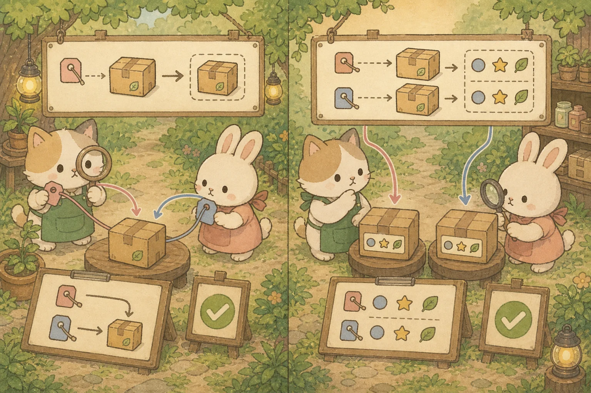
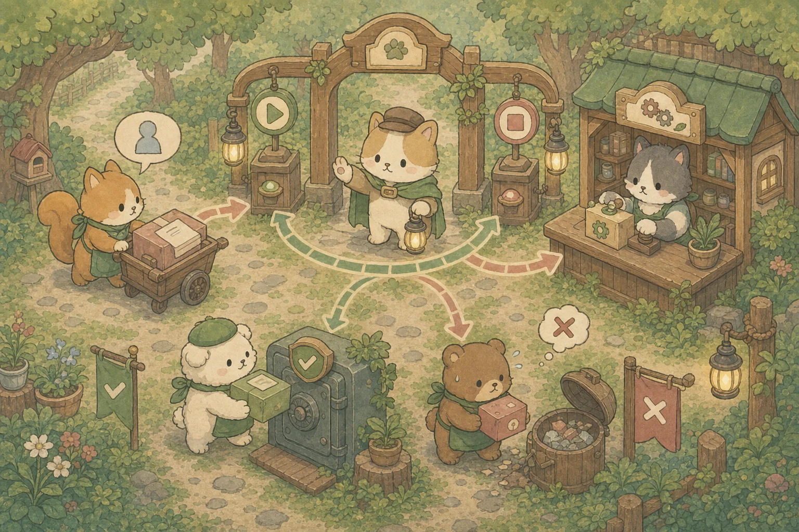
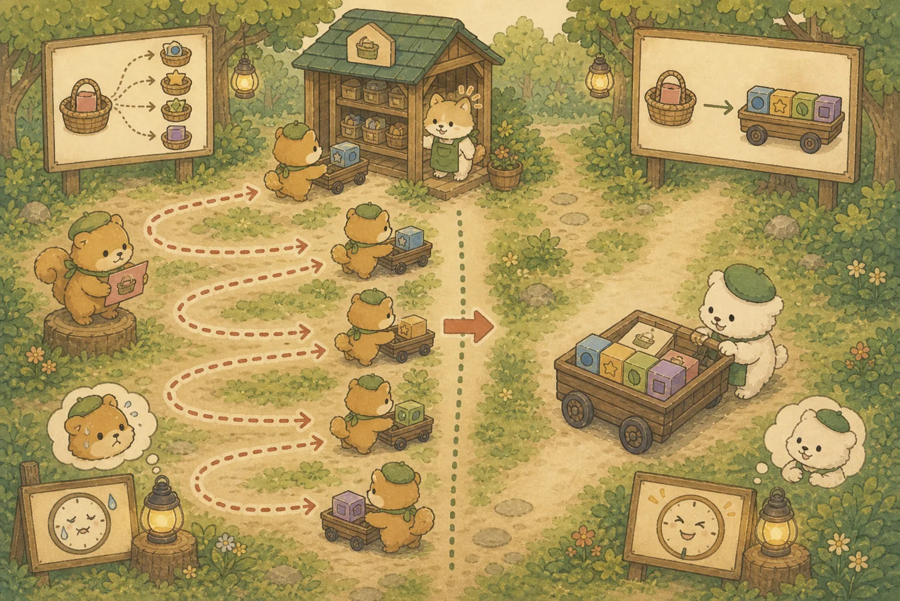
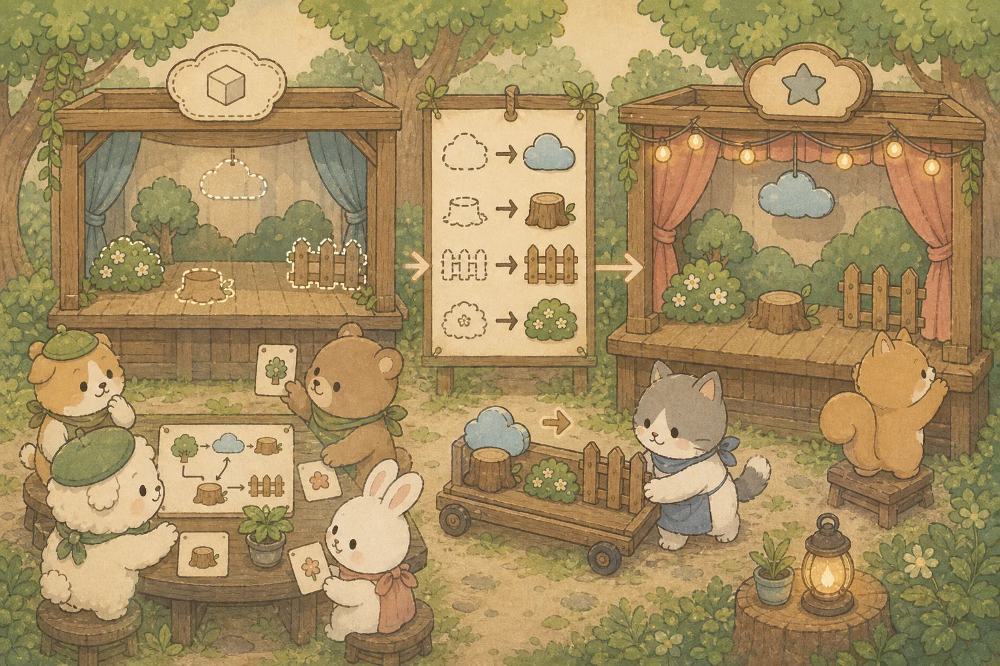
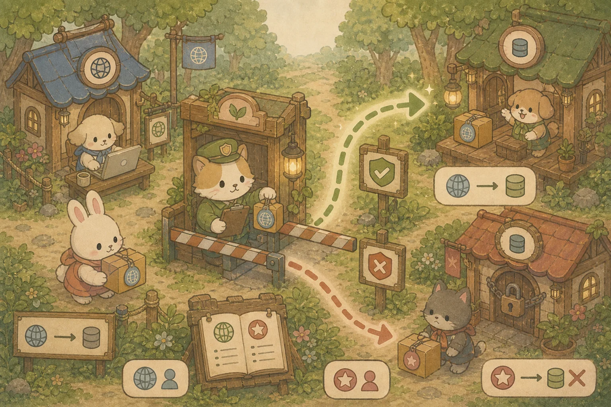
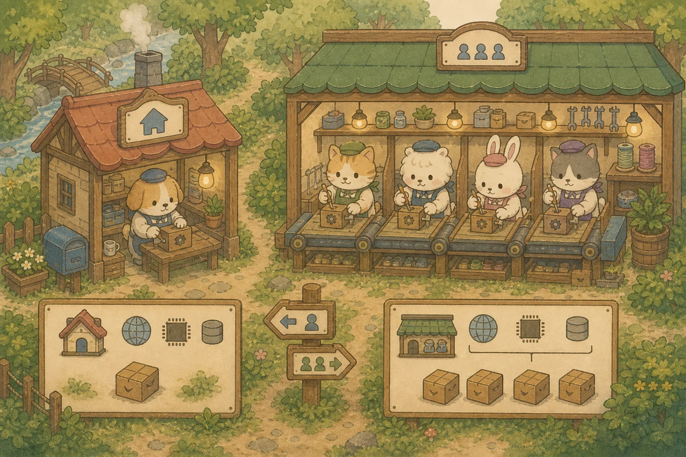
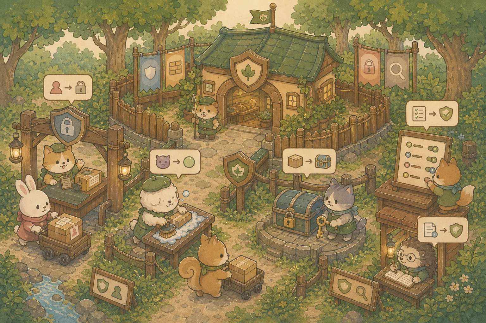
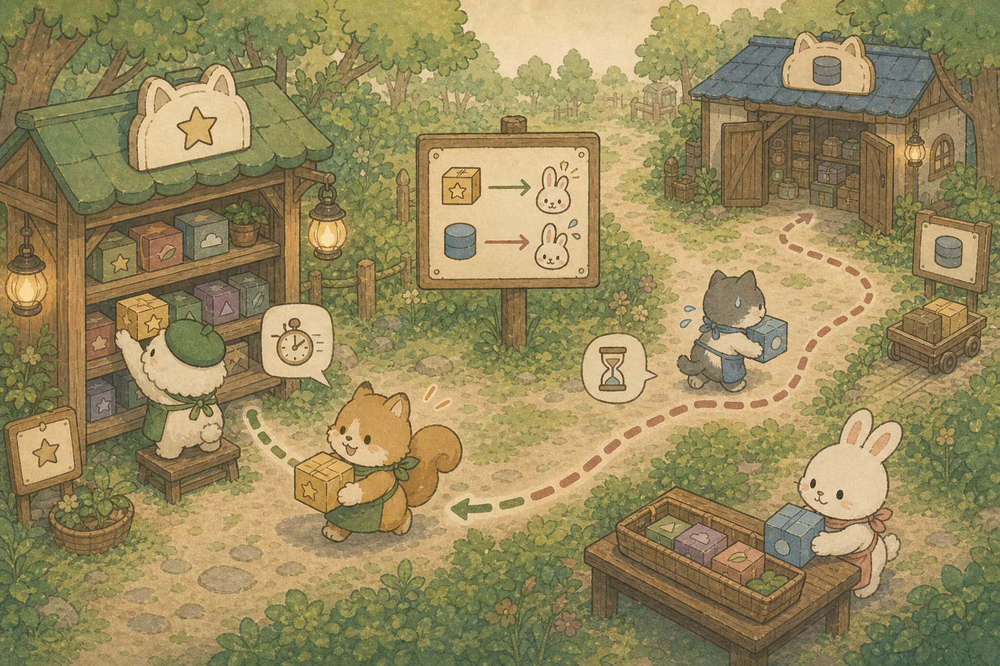

부록 B. 기술 면접 0순위 단골 CS & 심화 질문 백과
면접관들이 신입 및 경력 복귀 대상자에게 가장 높은 빈도로 물어보고 합격을 가르는 핵심 컴퓨터 사이언스(CS) 및 자바/스프링 프록시 심화 주제를 정밀 분석합니다. 총 20개 영역을 7대 카테고리로 묶어 정리합니다.
☕ A. Java Core 영역
Q1. == 연산자와 .equals()의 차이를 설명하세요
자바 면접의 1번 타자입니다. ==는 주소(Reference) 비교이고, .equals()는 값(Value) 비교입니다. 단, .equals()를 오버라이드하지 않은 클래스에서는 ==와 동일하게 동작합니다.
💡 비유로 이해하기: 쌍둥이의 주민등록번호 vs 얼굴
`==`는 "이 두 사람이 물리적으로 같은 사람인가?" — 주민등록번호(메모리 주소)가 동일한지 묻는 것입니다.
`.equals()`는 "이 두 사람이 생긴 게 같은가?" — 이름, 나이, 외형(값)이 같은지 묻는 것입니다.
일란성 쌍둥이는 .equals() = true이지만 == false입니다. 같은 사람 본인을 두 번 가리키면 둘 다 true입니다.

// 1. String 리터럴 → JVM String Pool에서 같은 주소를 공유
String a = "Antigravity";
String b = "Antigravity";
System.out.println(a == b); // true (같은 Pool 주소)
System.out.println(a.equals(b)); // true (값도 동일)
// 2. new String() → Heap에 새 객체 생성 (Pool 무시)
String c = new String("Antigravity");
System.out.println(a == c); // false (주소 다름!)
System.out.println(a.equals(c)); // true (값은 동일)
// 3. 커스텀 객체 — equals() 미 오버라이드 시 함정
class Product {
String name;
Product(String name) { this.name = name; }
}
Product p1 = new Product("셔츠");
Product p2 = new Product("셔츠");
System.out.println(p1.equals(p2)); // false! (equals 미구현 → 주소 비교)
// 4. Record는 equals()를 자동 생성해 줌
record ProductRecord(String name) {}
var r1 = new ProductRecord("셔츠");
var r2 = new ProductRecord("셔츠");
System.out.println(r1.equals(r2)); // true (자동 값 비교)💡 면접 꼬리 질문: "그렇다면 equals()를 오버라이드할 때 hashCode()도 반드시 함께 오버라이드해야 하는 이유는?" → HashMap, HashSet은 먼저 hashCode()로 버킷을 찾은 뒤 equals()로 동등성을 검사합니다. hashCode만 다르면 equals가 true여도 다른 버킷에 들어가 같은 객체가 2개 저장되는 버그가 발생합니다.
Q2. String이 불변(Immutable)인 이유와 String Pool을 설명하세요
자바의 String은 한 번 생성되면 내부 char[](Java 9부터 byte[]) 배열을 절대 변경할 수 없습니다. str + "추가"를 하면 기존 문자열을 수정하는 게 아니라 완전히 새로운 String 객체를 Heap에 생성합니다.
불변으로 설계한 3가지 핵심 이유:
🔒 보안
DB 커넥션 URL, 파일 경로 등이 String으로 전달됩니다. 중간에 값이 변조되면 보안 홀이 생기므로 불변이어야 안전합니다.
⚡ String Pool 캐싱
리터럴 문자열은 JVM String Pool에 1개만 저장하고 동일한 문자열을 재사용합니다. 불변이어야 공유해도 안전합니다.
🧵 스레드 안전
불변 객체는 멀티스레드 환경에서 동기화(synchronized) 없이도 안전하게 공유할 수 있습니다.
💡 면접 꼬리 질문: "String 연결을 반복문에서 + 연산자로 하면 안 되는 이유는?" → 반복마다 새 String 객체가 생성되어 GC 부담이 폭증합니다. 반복문에서는 StringBuilder(비동기) 또는 StringBuffer(동기)를 사용합니다.
Q3. JVM Garbage Collection(GC)의 동작 원리를 설명하세요
자바에서 더 이상 참조(Reference)가 없는 쓰레기 객체를 자동으로 메모리에서 수거하는 가비지 컬렉션(GC)의 물리 구조입니다.
💡 비유로 이해하기: 쇼핑몰 물류 창고의 재고 정리
Eden은 신상품이 처음 입고되는 "신상 입고 구역"입니다. 금방 팔려나가는(참조가 사라지는) 상품은 여기서 바로 폐기됩니다(Minor GC).
Survivor는 한 시즌 넘게 살아남은 "장기 재고 대기 구역"입니다. 여기서 여러 번 생존하면 나이(Age)가 올라갑니다.
Old Generation은 수년간 판매되지 않은 "영구 보관 창고"입니다. 여기가 가득 차면 창고 전체를 멈추고 대청소(Full GC/Major GC)를 합니다 — 이것이 Stop-The-World(STW)입니다.
👶 Young Generation (Eden & Survivor)
* 갓 생성된 새내기 DTO 등은 Eden 영역에 적재됩니다.
* Eden이 가득 차면 매우 빠른 Minor GC가 가동되어 살아남은 객체만 Survivor 1→2로 옮기며 나이(Age)를 올립니다. 대부분의 임시 객체는 여기서 사라집니다.
👴 Old Generation
* 나이(Age) 임계치를 넘긴 오래 살아남은 객체(스프링 빈 등)는 Old 영역으로 승격(Promotion)됩니다.
* 여기가 가득 차면 서버 전체를 잠시 멈추고 싹 청소하는 Major GC (Full GC)가 실행됩니다.
🛑 Stop-The-World (STW)
* GC 실행 시 JVM이 GC 스레드를 제외한 모든 애플리케이션 스레드를 일시 중지시키는 현상입니다. * 실무 GC 튜닝은 이 STW 정지 시간을 최소화하는 것입니다.
GC 알고리즘 비교:
Q4. HashMap의 내부 동작 원리와 해시 충돌 해결 방식을 설명하세요
HashMap은 내부적으로 배열(Node[]) + 연결 리스트/트리 구조입니다. key.hashCode()를 배열 크기로 나눈 나머지로 인덱스(버킷)를 결정하고, 같은 버킷에 여러 key가 들어오면 해시 충돌이 발생합니다.
💡 비유로 이해하기: 물류 창고 선반 배정
상품(Key)이 입고되면, 바코드 스캔(hashCode)으로 선반 번호(버킷 인덱스)가 결정됩니다. 같은 선반에 여러 상품이 배정되면(해시 충돌), 선반 위에 체인(Linked List)으로 순서대로 매달아 놓습니다. 체인이 8개 이상 길어지면 검색이 느려지므로 자동으로 이진 탐색 트리(Red-Black Tree)로 변환하여 O(n) → O(log n)으로 최적화합니다.
핵심 수치: 초기 용량 16, 로드 팩터 0.75 → 12개 이상 차면 배열 2배 확장(resize). 버킷 내 노드 8개 이상이면 트리화(treeify), 6개 이하로 줄면 다시 리스트화(untreeify).
💡 면접 꼬리 질문: "ConcurrentHashMap과의 차이는?" → HashMap은 스레드 비안전합니다. 멀티스레드 환경에서는 ConcurrentHashMap을 써야 하며, 이것은 버킷 단위 세그먼트 락(Java 8부터는 CAS + synchronized)으로 동시성을 보장합니다.
Q5. 자바의 비동기 처리: CompletableFuture와 Virtual Threads (Java 21)
기존 Future는 결과를 .get()으로 블로킹 대기해야 했지만, CompletableFuture는 콜백 체이닝으로 논블로킹 비동기 파이프라인을 구축합니다.
// 비동기로 상품 조회 → 가격 계산 → 결과 반환 (논블로킹 체이닝)
CompletableFuture.supplyAsync(() -> productRepository.findById(1L))
.thenApply(product -> product.getPrice() * 0.9) // 10% 할인 계산
.thenApply(price -> String.format("최종 가격: %,.0f원", price))
.thenAccept(result -> log.info(result)) // 결과 소비
.exceptionally(ex -> { // 예외 처리
log.error("비동기 처리 실패: " + ex.getMessage());
return null;
});Java 21 Virtual Threads (가상 스레드): 기존 플랫폼 스레드(OS 스레드 1:1 매핑)는 생성 비용이 크고 수천 개 수준이 한계였습니다. Virtual Thread는 JVM이 관리하는 초경량 스레드로 훨씬 많은 수를 생성할 수 있어, 블로킹 I/O 대기가 병목인 워크로드의 동시 처리량을 높입니다. 단, 실제 한계는 DB 커넥션 풀·CPU·외부 API에 묶이고, CPU-bound 작업은 빨라지지 않으며, synchronized 블로킹은 캐리어 스레드를 pinning시킵니다(→ ReentrantLock 권장).
// 가상 스레드 생성 — OS 스레드가 아닌 JVM 경량 스레드
Thread.startVirtualThread(() -> {
var product = productRepository.findById(1L); // I/O 블로킹 시 자동 양보
log.info("상품: " + product.getName());
});
// ExecutorService로 가상 스레드 풀 (스레드 수 제한 불필요!)
try (var executor = Executors.newVirtualThreadPerTaskExecutor()) {
for (int i = 0; i < 100_000; i++) {
executor.submit(() -> processOrder(i)); // 10만 개 동시 실행 가능!
}
} // try-with-resources로 자동 종료핵심 포인트: Virtual Thread는 I/O 블로킹 시 자동으로 캐리어 스레드를 양보(unmount)하므로, Thread.sleep()이나 DB 호출이 있어도 OS 스레드를 점유하지 않습니다.
🌿 B. Spring Framework 영역
Q6. IoC(제어의 역전)와 DI(의존성 주입)를 설명하세요
IoC(Inversion of Control)는 객체의 생성과 생명주기 관리 권한을 개발자가 아닌 스프링 컨테이너에 위임하는 설계 원칙입니다. DI(Dependency Injection)는 IoC를 실현하는 구체적 방법으로, 필요한 의존 객체를 외부에서 주입받습니다.
💡 비유로 이해하기: 패션 디자이너와 자재 관리 창고
레거시 방식: 디자이너(Service)가 직접 시장에 가서 원단(Repository)을 고르고 사 옵니다 → new ProductRepository()
IoC/DI 방식: 디자이너가 "원단 필요합니다"라고 주문서(생성자 파라미터)만 제출하면, 자재 관리 창고(스프링 컨테이너)가 알아서 최적의 원단을 골라서 책상 위에 배달해 줍니다 → 생성자 주입
DI 방식 3가지와 권장도:
Q7. 스프링 Bean 생명주기(Lifecycle)를 설명하세요
스프링 빈은 다음의 순서로 탄생부터 소멸까지 관리됩니다:
① 스프링 컨테이너 시작 → ② 빈 인스턴스 생성 → ③ 의존성 주입(DI) → ④ 초기화 콜백 (@PostConstruct) → ⑤ 사용 → ⑥ 소멸 콜백 (@PreDestroy) → ⑦ 스프링 컨테이너 종료
Bean Scope: @Scope("singleton")(디폴트, 컨테이너당 1개) vs @Scope("prototype")(요청마다 새 객체). Web scope로는 request, session이 있습니다.
💡 면접 꼬리 질문: "Singleton 빈에서 Prototype 빈을 주입받으면 어떻게 되나요?" → Singleton이 생성될 때 딱 한 번만 Prototype이 주입되므로, 이후에는 항상 같은 Prototype 인스턴스를 사용합니다. 매번 새 Prototype이 필요하면 ObjectProvider 또는 Provider를 사용해야 합니다.
Q8. @Transactional의 동작 원리와 Self-Invocation 함정을 설명하세요
스프링의 @Transactional은 AOP 프록시를 통해 동작합니다. 외부에서 빈의 메서드를 호출하면 프록시 객체가 가로채서 트랜잭션을 열고, 메서드가 정상 종료되면 커밋, 예외가 발생하면 롤백합니다.
💡 비유로 이해하기: 은행 창구의 보안 카드
은행(스프링 컨테이너)에서 고객(컨트롤러)이 창구 직원(서비스)에게 업무를 요청하면, 보안 카드 리더기(AOP 프록시)가 먼저 신원을 확인하고 트랜잭션 장부를 엽니다. 하지만 창구 직원이 자기 옆자리 동료(같은 클래스 내부 메서드)를 직접 부르면, 보안 카드 리더기를 거치지 않으므로 트랜잭션이 작동하지 않습니다!

@Service
public class OrderService {
// 외부에서 호출되는 일반 메서드 (트랜잭션 X)
public void orderClothes(OrderRequest req) {
// ⚠️ 치명적 함정: this를 통해 내부 메서드를 직접 호출
// → AOP 프록시를 거치지 않으므로 @Transactional 무시됨!
saveToDatabase(req);
}
@Transactional
public void saveToDatabase(OrderRequest req) {
orderRepository.save(new Order(req)); // 예외 시 롤백 불가!
}
}
// ✅ 해결 방법 1: 클래스 분리 (가장 권장)
@Service
@RequiredArgsConstructor
public class OrderFacade {
private final OrderPersistService persistService;
public void orderClothes(OrderRequest req) {
persistService.saveToDatabase(req); // 외부 빈 호출 → 프록시 정상 작동!
}
}
@Service
public class OrderPersistService {
@Transactional
public void saveToDatabase(OrderRequest req) {
orderRepository.save(new Order(req)); // 정상 롤백 가능
}
}@Transactional 전파 수준 (Propagation):
💡 주의: @Transactional(readOnly = true)는 읽기 전용 힌트로 Hibernate의 flush/더티 체킹 부담을 줄일 수 있습니다(정확한 동작은 프로바이더·버전 의존). 성능 힌트이자 "쓰기 없음" 의도 표현이며 읽기 복제본 라우팅에도 쓰입니다. 조회 메서드에 붙이는 습관을 권장합니다.
Q9. Filter vs Interceptor vs AOP의 차이를 설명하세요
웹 요청 처리 파이프라인에서 세 가지 가로채기(Cross-cutting) 메커니즘의 동작 위치와 용도가 다릅니다:
HTTP 요청 →
[ Filter ] →
[ DispatcherServlet ] →
[ Interceptor ] →
[ Controller ] →
[ AOP ] →
[ Service ]
🗄️ C. JPA & Database 영역
Q10. JPA N+1 문제란 무엇이고 어떻게 해결하나요?
부모 엔티티 1건을 조회할 때, 연관된 자식 엔티티를 지연 로딩(LAZY)으로 접근하면 자식 수(N)만큼 추가 쿼리가 발생하는 성능 폭탄입니다. 1 + N번의 쿼리가 실행되므로 N+1이라 부릅니다.
💡 비유로 이해하기: 택배 개별 배송 vs 합포장
고객 1명에게 10개 상품을 보내는데, 매번 택배 차를 따로 보내면 트럭이 10대 필요합니다(N+1). Fetch Join은 10개 상품을 한 박스에 합포장하여 트럭 1대로 끝내는 것입니다.

해결 방법 3가지:
1. Fetch Join (JPQL)
SELECT p FROM Product p JOIN FETCH p.reviews — 한 방 쿼리로 부모+자식을 모두 가져옵니다. 단, 페이징 불가(MultipleBagFetchException 주의).
2. @EntityGraph
@EntityGraph(attributePaths = {"reviews"}) — 어노테이션만으로 Fetch 전략을 EAGER로 임시 변경합니다.
3. @BatchSize
@BatchSize(size = 100) — 지연 로딩 시 IN 쿼리로 한 번에 100건씩 묶어서 조회합니다. N+1 → 1+⌈N/100⌉ 쿼리로 감소.
Q11. JPA 영속성 컨텍스트(Persistence Context)란?
영속성 컨텍스트는 엔티티를 관리하는 1차 캐시입니다. 같은 트랜잭션 내에서 같은 ID로 조회하면 DB를 다시 치지 않고 캐시에서 반환합니다.
핵심 기능 3가지:
1차 캐시 (Identity Map)
같은 트랜잭션에서 findById(1L)을 2번 호출해도 DB 쿼리는 1번만 발생합니다.
쓰기 지연 (Write-behind)
persist() 호출 시 즉시 INSERT 하지 않고, flush() 또는 트랜잭션 커밋 시점에 한꺼번에 SQL을 보냅니다.
변경 감지 (Dirty Checking)
영속 상태의 엔티티 필드를 수정하면, 커밋 시 자동으로 UPDATE 쿼리가 생성됩니다. save()를 다시 호출할 필요 없습니다.
Q12. 데이터베이스 트랜잭션 격리 수준 4단계를 설명하세요
복수의 사용자가 동시에 동일한 행에 접근할 때 데이터 정합성을 보호하는 DBMS의 격리 수준입니다.
용어 정리:
- Dirty Read: 커밋되지 않은 다른 트랜잭션의 데이터를 읽는 것
- Non-Repeatable Read: 같은 쿼리를 두 번 실행했을 때 값이 달라지는 것
- Phantom Read: 같은 조건으로 조회했을 때 행의 수가 달라지는 것
Q13. 데이터베이스 인덱스(Index)의 원리와 주의사항을 설명하세요
인덱스는 B-Tree 구조로 정렬된 "목차"입니다. Full Table Scan(O(n))을 Index Seek(O(log n))으로 바꿔 줍니다.
인덱스가 무효화되는 7가지 경우 (면접 빈출!):
WHERE UPPER(name) = 'SHIRT'— 인덱스 컬럼에 함수를 적용하면 무효화WHERE name LIKE '%셔츠'— 앞에 와일드카드(%)가 오면 무효화WHERE price + 100 > 50000— 인덱스 컬럼에 연산을 하면 무효화WHERE price != 50000— 부정 조건(!=, NOT IN)은 인덱스 비효율- 인덱스 컬럼에 암묵적 형변환이 발생하는 경우 (문자열 컬럼에 숫자 비교)
- 복합 인덱스에서 첫 번째 컬럼을 건너뛰는 경우 (A, B, C 인덱스에서 B만 조건)
- 테이블 전체의 대부분의 행이 조건에 해당하면 옵티마이저가 Full Scan 선택
⚛️ D. React & Frontend 영역
Q14. React의 Virtual DOM과 Reconciliation 알고리즘을 설명하세요
Virtual DOM은 실제 DOM의 가벼운 JavaScript 객체 복사본입니다. 상태가 변경되면 새 Virtual DOM을 만들고, 이전 것과 비교(Diffing)하여 변경된 부분만 실제 DOM에 반영합니다.
💡 비유로 이해하기: 건축 설계 도면 대조
건물(실제 DOM)을 고칠 때 매번 전체를 부수고 다시 짓는 대신, 설계 도면(Virtual DOM) 2장을 겹쳐서 달라진 부분만 찾아 해당 벽만 공사합니다. 이것이 Reconciliation(재조정)입니다.

Diffing 알고리즘 핵심 규칙:
- 다른 타입의 엘리먼트 → 기존 트리를 버리고 새로 빌드 (예:
<div>→<span>) - 같은 타입의 엘리먼트 → 속성(attribute)만 비교하여 변경된 것만 업데이트
- 리스트 렌더링 →
keyprop으로 각 항목을 식별하여 재배치 최소화
💡 면접 꼬리 질문: "key에 index를 쓰면 왜 안 되나요?" → 배열 중간에 아이템이 삽입/삭제되면 index가 밀려서 React가 잘못된 컴포넌트를 재사용합니다. 고유 ID를 key로 사용해야 합니다.
Q15. useCallback, useMemo, React.memo의 차이와 사용 시기를 설명하세요
import { useMemo, useCallback, memo } from 'react';
function ProductList({ products, onAddToCart }) {
// ✅ useMemo: 정렬 연산 결과를 캐싱 (products가 바뀔 때만 재계산)
const sortedProducts = useMemo(
() => [...products].sort((a, b) => b.price - a.price),
[products]
);
// ✅ useCallback: 함수 참조를 캐싱 (onAddToCart가 바뀔 때만 재생성)
const handleAdd = useCallback(
(id) => onAddToCart(id),
[onAddToCart]
);
return sortedProducts.map(p => (
💡 주의: 무분별한 메모이제이션은 오히려 메모리 낭비입니다. 실제로 성능 병목이 있을 때만 적용하세요. React DevTools의 Profiler로 불필요한 리렌더를 먼저 확인합니다.
🌐 E. Network & Web 영역
Q16. TCP 3-Way Handshake와 HTTP 버전별 차이를 설명하세요
TCP 3-Way Handshake: 클라이언트와 서버가 통신을 시작하기 전, 서로의 존재를 확인하는 3단계 악수입니다.
클라이언트 → SYN →
← SYN+ACK ← 서버
클라이언트 → ACK →
(연결 완료!)
HTTP 버전 비교:
Q17. Cookie vs Session vs JWT 토큰 인증 방식의 차이를 설명하세요
💡 면접 꼬리 질문: "JWT 토큰이 탈취되면 어떻게 대응하나요?" → Access Token의 유효기간을 짧게 설정(15분)하고, Refresh Token을 이용한 재발급 전략 + Redis 블랙리스트로 탈취된 토큰을 즉시 무효화합니다.
Q18. CORS(Cross-Origin Resource Sharing)의 동작 원리를 설명하세요
브라우저는 보안을 위해 현재 페이지의 출처(Origin)와 다른 출처로의 HTTP 요청을 기본적으로 차단합니다. CORS는 서버가 "이 출처는 허용한다"는 헤더를 보내어 교차 출처 요청을 허가하는 메커니즘입니다.
💡 비유로 이해하기: 아파트 방문자 출입 시스템
아파트(서버)에 들어가려면 입주민(같은 Origin)은 자유롭게 출입하지만, 외부 방문자(다른 Origin)는 경비실(브라우저)에서 차단됩니다. 입주민이 미리 "이 사람 방문 허용"이라고 등록(CORS 헤더)해 두면 경비실이 통과시켜 줍니다.

CORS 요청 흐름 (Preflight):
- 브라우저가
OPTIONS메서드로 사전 확인(Preflight) 요청을 보냄 - 서버가
Access-Control-Allow-Origin: https://example.com헤더로 응답 - 브라우저가 허용 확인 후 본 요청(Actual Request)을 전송
단순 요청(Simple Request)의 경우 GET, POST(Content-Type이 application/x-www-form-urlencoded, multipart/form-data, text/plain 중 하나)이면 Preflight 없이 바로 요청됩니다.
🖥️ F. OS & CS 기초 영역
Q19. 프로세스(Process)와 스레드(Thread)의 차이를 설명하세요
💡 비유로 이해하기: 공장과 생산 라인
프로세스는 독립된 공장입니다. 각 공장은 자체 전기, 물, 자재(메모리 공간)를 갖고 다른 공장과 자원을 공유하지 않습니다.
스레드는 한 공장 안의 생산 라인입니다. 같은 공장의 전기와 자재(Heap 메모리)를 공유하지만, 각 라인에는 자기만의 작업 매뉴얼(Stack)이 있습니다.

💡 면접 꼬리 질문: "멀티스레드 환경에서 ThreadLocal 메모리 누수는 왜 발생하나요?" → 톰캣의 스레드 풀은 스레드를 재활용합니다. 요청 A가 ThreadLocal에 데이터를 넣고 remove()하지 않으면, 같은 스레드를 재사용하는 요청 B가 A의 데이터를 보게 되어 보안 사고 또는 OOM이 발생합니다. 반드시 threadLocal.remove()를 호출해야 합니다.
Q20. 데드락(Deadlock)이란 무엇이고 발생 조건 4가지를 설명하세요
두 개 이상의 스레드(또는 프로세스)가 서로가 점유한 자원을 기다리며 무한 대기하는 상태입니다.
💡 비유로 이해하기: 좁은 골목길의 두 트럭
일방통행 좁은 골목에서 트럭 A(스레드 A)와 트럭 B(스레드 B)가 서로 마주보고 들어왔습니다. A는 "B가 후진하면 내가 갈 수 있어"라고 기다리고, B도 "A가 후진하면 내가 갈 수 있어"라고 기다립니다. 둘 다 양보하지 않으면 영원히 막혀 있습니다 — 이것이 데드락입니다.
데드락 발생 필요 조건 4가지 (Coffman 조건):
1. 상호 배제
자원은 한 번에 한 스레드만 사용 가능 (Mutex)
2. 점유와 대기
자원을 점유한 채 다른 자원을 기다림
3. 비선점
점유한 자원을 강제로 빼앗을 수 없음
4. 순환 대기
A→B→C→A 원형으로 서로를 대기
해결 전략: 4가지 조건 중 하나만 깨뜨리면 데드락이 방지됩니다. 실무에서는 자원 획득 순서를 전역적으로 통일하거나(순환 대기 제거), 타임아웃을 설정하여 일정 시간 후 자원을 포기하게 합니다.
🏗️ G. 시스템 설계 & 디자인 패턴 영역
부록 Q21. SOLID 원칙을 설명하세요
객체 지향 설계의 5대 기본 원칙으로, 유지보수 가능하고 확장에 유연한 소프트웨어를 만드는 지침입니다.
부록 Q22. 실무에서 자주 쓰이는 디자인 패턴 5선
1. Singleton (싱글톤)
인스턴스가 딱 1개만 존재하도록 보장. 스프링 빈의 기본 스코프가 바로 Singleton입니다.
2. Factory Method (팩토리)
객체 생성 로직을 서브클래스에 위임. PaymentFactory.create("card") → CardPayment 반환. 직접 new를 쓰지 않습니다.
3. Strategy (전략)
알고리즘을 인터페이스로 추출하여 런타임에 교체. 할인 정책(정률/정액/VIP)을 전략 패턴으로 구현하면 if-else 지옥에서 탈출합니다.
4. Observer (관찰자)
이벤트 발생 시 등록된 구독자에게 알림. Spring의 ApplicationEventPublisher가 대표적인 Observer 패턴 구현체입니다.
5. Proxy (프록시)
실제 객체 앞에 대리인을 세움. Spring AOP의 @Transactional, @Cacheable이 모두 프록시 패턴으로 동작합니다.
부록 Q23. 시스템 설계 기초: 캐시, 로드 밸런서, 메시지 큐
대규모 트래픽을 처리하기 위한 3대 인프라 패턴입니다.
🗄️ 캐시 (Redis)
* 자주 조회되는 데이터를 인메모리에 저장하여 DB 부하를 줄임
* Cache Aside: 캐시에 없으면 DB 조회 → 캐시에 저장 → 반환
* Write Through: 쓰기 시 캐시와 DB를 동시에 업데이트
* TTL(유효시간)을 설정하여 오래된 데이터 자동 만료
⚖️ 로드 밸런서 (ALB/Nginx)
* 들어오는 요청을 여러 서버에 균등 분배
* Round Robin: 순서대로 돌아가며 배분
* Least Connection: 연결이 가장 적은 서버에 우선 배분
* Health Check로 죽은 서버 자동 제외
📨 메시지 큐 (Kafka/RabbitMQ)
* 생산자(Producer)와 소비자(Consumer) 사이에 비동기 버퍼를 둠
* 주문 접수 → 큐에 넣고 즉시 응답 → 결제/알림은 비동기 처리
* 서비스 간 느슨한 결합(Decoupling) 달성
* 트래픽 급증 시 큐가 완충 장치 역할
🎤 H. 행동 면접 (Behavioral) 팁
부록 Q24. STAR 기법으로 행동 면접 답변 구조화하기
기술 면접 외에 "협업에서 갈등을 겪은 적은?", "가장 어려웠던 기술적 도전은?" 같은 행동 면접에서는 STAR 기법으로 답변을 구조화합니다.
S — Situation (상황)
어떤 프로젝트에서, 어떤 맥락이었는지 간결하게 설명
T — Task (과제)
본인에게 주어진 구체적인 역할과 책임
A — Action (행동)
문제를 해결하기 위해 본인이 취한 구체적 행동
R — Result (결과)
행동의 결과를 수치로 제시 (성능 30% 개선, 버그 50% 감소 등)
자기소개 템플릿 (경력 복귀자용):
Q25. OWASP Top 10 보안 위협과 Spring/React 측 대응법을 설명하세요
OWASP Top 10 (2021)은 웹 애플리케이션에서 가장 빈번하고 치명적인 보안 위협 10가지를 정리한 표준입니다. 시니어 면접 단골 주제입니다.

| 위협 | 예시 | 대응 |
|---|---|---|
| A01 Broken Access Control | 남의 주문서를 URL ID 바꿔서 조회 | Spring Security @PreAuthorize("#userId == authentication.principal.id") |
| A02 Cryptographic Failures | 비밀번호 평문 저장, 약한 해시 | BCrypt (work factor 12+), HTTPS 강제, TLS 1.3 |
| A03 Injection (SQL/XSS) | "' OR '1'='1" 입력 |
JPA/MyBatis Prepared Statement, React JSX 자동 이스케이프 (dangerouslySetInnerHTML 금지) |
| A04 Insecure Design | 비밀번호 찾기에 이메일만 묻기 | 위협 모델링(Threat Modeling), 보안 요구사항을 설계 단계에서 |
| A05 Security Misconfiguration | Actuator /env 노출, 디폴트 비밀번호 | management.endpoints.web.exposure.include 제한, 기본 자격증명 금지 |
| A06 Vulnerable Components | Log4Shell 같은 CVE 미패치 라이브러리 | Dependabot/Snyk 자동 스캔, 정기 의존성 업그레이드 |
| A07 Auth Failures | JWT 만료 시간 무한, 토큰 탈취 | Access Token 짧게(15분) + Refresh Token, Redis Blacklist |
| A08 Software/Data Integrity | 서명 안 된 업데이트 자동 적용 | CI/CD 파이프라인 무결성 검증, 이미지 서명 (Cosign) |
| A09 Logging Failures | 보안 이벤트 미기록, 비밀번호를 로그에 | SLF4J 구조화 로깅 + PII 마스킹, 보안 이벤트 별도 채널 |
| A10 SSRF | 사용자 입력 URL을 서버가 그대로 호출 → 내부망 스캔 | 화이트리스트 도메인만 허용, 내부 IP 차단(169.254.169.254 등) |
CSRF (옛 OWASP Top 10에 있었던 클래식 위협): Cookie 기반 세션을 쓸 때 다른 사이트가 사용자 모르게 POST 요청을 위조하는 공격. JWT를 Authorization 헤더로 보내는 패턴은 CSRF에 자연스럽게 안전합니다 (브라우저가 자동으로 헤더를 추가하지 않으므로). Cookie 인증 쓰면 SameSite=Strict 또는 CSRF 토큰 필수.
Q26. 캐싱 전략 — @Cacheable · Look-aside vs Write-through · 무효화 패턴
JWT Blacklist는 Redis의 한 가지 용법일 뿐입니다. 본격적인 캐싱 전략은 읽기 빈도가 높은 데이터를 어디에 어떻게 저장하고 언제 무효화할지의 설계 문제입니다.
💡 비유로 이해하기: 도서관 사서의 책상 위 vs 서고
인기 책(상품 베스트셀러)은 사서가 자기 책상 위(Redis 캐시)에 두고 즉시 꺼내줍니다. 안 빌려가는 책(롱테일 상품)은 멀리 서고(DB)에 갑니다. 사서의 책상 위 공간(메모리)이 한정되므로 어떤 책을 책상에 둘지, 언제 서고로 돌려보낼지가 캐싱의 핵심 결정입니다.

3대 캐싱 패턴:
| 패턴 | 읽기 흐름 | 쓰기 흐름 | 트레이드오프 |
|---|---|---|---|
| Look-aside (Cache-Aside) | 앱이 캐시 먼저 → 없으면 DB → 캐시 채움 | DB에 직접 쓰고 캐시 무효화 or 갱신 | 가장 보편적. 캐시 장애 시 DB 폭주 위험 (Thundering Herd) |
| Write-through | 캐시에서 읽기 | 캐시에 쓰면 캐시가 동기로 DB에도 씀 | 쓰기 지연 발생, 일관성 보장 강함 |
| Write-behind (Write-back) | 캐시에서 읽기 | 캐시에 쓰고 DB 쓰기는 비동기 큐로 | 쓰기 성능 극대화, 캐시 장애 시 데이터 손실 위험 |
// build.gradle: spring-boot-starter-cache + spring-data-redis
@EnableCaching
@Configuration
public class CacheConfig {
@Bean
public RedisCacheConfiguration cacheConfig() {
return RedisCacheConfiguration.defaultCacheConfig()
.entryTtl(Duration.ofMinutes(10)) // 기본 TTL
.disableCachingNullValues();
}
}
@Service
@RequiredArgsConstructor
public class ProductService {
@Cacheable(value = "products", key = "#id") // 캐시 키: products::42
public ProductResponse findById(Long id) {
return productRepo.findById(id)
.map(ProductResponse::from)
.orElseThrow();
}
@CacheEvict(value = "products", key = "#id") // 무효화
@Transactional
public void update(Long id, ProductRequest req) {
var product = productRepo.findById(id).orElseThrow();
product.update(req); // 더티 체킹으로 DB 반영
}
@CachePut(value = "products", key = "#result.id") // 결과를 캐시에 덮어쓰기
@Transactional
public ProductResponse refresh(Long id) {
// 캐시를 갱신하지만 메서드는 항상 실행
return ProductResponse.from(productRepo.findById(id).orElseThrow());
}
}캐시 무효화의 함정 (가장 자주 면접 질문):
- Thundering Herd: 인기 키가 TTL 만료되면 수만 요청이 동시에 DB로 몰림 → 해결: 분산 락(Redisson)으로 한 요청만 DB 갱신, 나머지는 대기.
- 캐시 일관성: DB 업데이트 후 캐시 무효화 사이에 다른 스레드가 옛 캐시 값을 새로 캐싱 → 해결: 트랜잭션 커밋 이후 캐시 무효화 (Spring
@TransactionalEventListener). - 스탬피드 방지: TTL에 약간의 랜덤 추가(jitter) → 같은 시점에 만료되지 않게.
⛓️ 캐싱 인프라 자체는 Chapter 4 — Redis Blacklist에서 다뤘으나 본 Q는 일반 데이터 캐싱으로 범위가 다릅니다.
Q27. @Transactional 추가 함정 — Propagation · Rollback Rules · readOnly
Q8(Self-Invocation)에 이어, 실무 면접에서 깊이 들어오는 @Transactional 함정 3종을 추가로 다룹니다.
① Propagation (전파 속성) 7종 중 자주 묻는 4가지:
| Propagation | 의미 | 사용 시나리오 |
|---|---|---|
REQUIRED (기본값) | 기존 트랜잭션이 있으면 참여, 없으면 새로 시작 | 99% 케이스. 그냥 두면 됨. |
REQUIRES_NEW | 항상 새 트랜잭션 시작. 기존 트랜잭션은 일시 정지 | 로그 저장, 알림 전송처럼 부모 롤백되어도 살아남아야 하는 작업 |
NESTED | 중첩 트랜잭션 (SAVEPOINT 사용) | 부분 롤백이 필요한 경우. SAVEPOINT 지원 DB·드라이버 필요(대부분 지원, JPA 전 DBMS 이식성은 별개). |
SUPPORTS | 트랜잭션이 있으면 참여, 없으면 트랜잭션 없이 실행 | 조회 메서드 (드물게 사용) |
② Rollback Rules — 기본은 RuntimeException만 롤백!
// ❌ 함정: Checked Exception은 기본적으로 롤백 안 됨!
@Transactional
public void placeOrder(OrderRequest req) throws IOException {
orderRepo.save(Order.from(req));
sendNotification(req); // throws IOException (Checked)
// IOException이 터지면? 트랜잭션 커밋됨. 주문은 저장되고 알림만 실패.
}
// ✅ 해결법 1: rollbackFor 지정
@Transactional(rollbackFor = Exception.class)
public void placeOrder(OrderRequest req) throws IOException {
// 이제 IOException도 롤백 발생
}
// ✅ 해결법 2: RuntimeException으로 변환 (권장)
@Transactional
public void placeOrder(OrderRequest req) {
orderRepo.save(Order.from(req));
try {
sendNotification(req);
} catch (IOException e) {
throw new NotificationException(e); // RuntimeException → 자동 롤백
}
}③ readOnly = true의 진짜 효과:
- JPA 측: 더티 체킹 비활성화 → flush 안 일어남 → 메모리/CPU 절약
- DB 측: 일부 DB는 readOnly 힌트를 받아 옵티마이저가 더 빠른 쿼리 플랜 사용
- 복제 DB 라우팅:
AbstractRoutingDataSource로 readOnly 트랜잭션을 Slave로 라우팅 가능 - 주의: readOnly 안에서 save를 호출해도 즉시 에러는 안 남. 트랜잭션 끝날 때 일부 DB에서 에러 (구현 의존적)
@Service
@Transactional(readOnly = true) // 클래스 레벨 기본
public class ProductService {
public ProductResponse findById(Long id) { // readOnly 적용
return ...;
}
@Transactional // 메서드 레벨이 우선
public ProductResponse create(ProductRequest req) { // readOnly 해제
return ...;
}
}Q28. 객체지향 4대 특성과 오버로딩 vs 오버라이딩
객체지향(OOP)의 4대 특성은 거의 모든 신입~경력 면접의 단골 질문입니다. 단순 암기가 아니라 "왜 이 특성이 유지보수를 쉽게 만드는지" 실무 효용까지 한 문장으로 설명할 수 있어야 합격권이며, 자연스럽게 오버로딩/오버라이딩과 다형성으로 꼬리질문이 이어집니다.
💡 비유로 이해하기: 자동차 운전
운전자는 엔진 내부를 몰라도 핸들·페달만으로 차를 몹니다(캡슐화 — 내부를 숨기고 인터페이스만 노출).
전기차·휘발유차는 모두 '자동차'라는 큰 틀을 물려받고(상속), 운전자는 차종을 몰라도 '가속 페달'을 밟으면 각 차가 알아서 가속합니다(다형성).
'탈것'이라는 개념은 직접 만들 수 없는 추상적 틀일 뿐, 실제로는 자동차·자전거가 그것을 구체화합니다(추상화).
① 객체지향 4대 특성 (쇼핑몰 Rehab Fashion 도메인 예시)
캡슐화 (Encapsulation)
데이터(필드)와 행위(메서드)를 한 객체로 묶고 내부 구현을 숨겨 외부에는 메서드만 노출.
예: Order의 totalPrice를 private으로 막고 addItem()으로만 변경 → 음수 금액 같은 잘못된 상태를 원천 차단. 효용: 불변식 보장·변경 파급 최소화.
상속 (Inheritance)
부모의 필드·메서드를 자식이 물려받아 코드 재사용.
예: Product를 Clothing, Accessory가 상속해 공통 속성(이름·가격) 재활용. 효용: 중복 제거. 단, 강한 결합을 만들 수 있어 "상속보다 합성(composition)"이 실무 정설.
다형성 (Polymorphism)
같은 메시지(메서드 호출)에 객체마다 다르게 반응.
예: PaymentMethod 타입으로 받아 pay()만 호출하면 카드·계좌이체 구현체가 각자 동작. 효용: 새 결제수단 추가 시 호출부 수정 불필요(OCP 실현).
추상화 (Abstraction)
공통 개념만 뽑아 인터페이스/추상클래스로 정의하고 세부 구현은 미룸.
예: interface DiscountPolicy { calc(...) }로 '할인'이라는 본질만 규정. 효용: 구현 교체가 자유롭고 의존이 추상에 향함(DIP).
② 오버로딩(Overloading) vs 오버라이딩(Overriding) — 이름이 비슷해 면접관이 일부러 헷갈리게 묻습니다. 결정 시점(컴파일 vs 런타임)으로 구분하는 것이 핵심입니다.
③ 다형성과 동적 디스패치(가상 메서드) 한 줄 예시 — 변수 타입은 부모(Product)이지만, 실제로 실행되는 메서드는 런타임의 실제 객체(Clothing)가 결정합니다. Java의 인스턴스 메서드는 기본이 virtual이기 때문입니다.
// 부모 타입 참조변수에 자식 객체를 담는다 (업캐스팅)
Product p = new Clothing(); // 컴파일러가 보는 타입: Product
p.getLabel(); // 실제 실행: Clothing.getLabel() — 런타임 객체 기준!
// └─ "가상 메서드 테이블(vtable)"을 통해 실제 객체의 오버라이드 버전이 호출됨④ 추상 클래스 vs 인터페이스 (꼬리질문 대비 핵심 정리)
💡 면접 꼬리 질문: "추상 클래스와 인터페이스, 둘 다 가능할 때 무엇을 선택하나요?" → "구현 코드와 상태를 공유하는 is-a 관계의 공통 부모가 필요하면 추상 클래스를, 서로 무관한 클래스에 역할(능력)을 부여하거나 다중 구현·느슨한 결합이 필요하면 인터페이스를 택합니다. 실무에선 '인터페이스로 계약을 정의하고, 공통 구현이 많아지면 추상 클래스로 보조'하는 조합을 자주 씁니다. Java 8 이후 인터페이스도 default 메서드로 구현을 가질 수 있지만, 상태(필드)는 못 갖는다는 점이 여전히 핵심 차이입니다."
Q29. JVM 메모리 영역과 클래스로더 부모 위임
JVM이 클래스를 어떻게 로드하고 메모리를 어디에 어떻게 나눠 담는지는 백엔드 면접의 단골 주제입니다. OutOfMemoryError·StackOverflowError를 만난 적이 있다면, 그 원인이 바로 이 런타임 데이터 영역과 직결됩니다. "메모리 영역을 스레드 기준으로 나눠서 설명해 보라"는 요청이 빈출이니, 무엇이 공유되고 무엇이 스레드별인지를 명확히 구분하는 게 핵심입니다.
💡 비유로 이해하기: 회사 건물의 공용 공간과 개인 책상
JVM 메모리는 한 건물(프로세스) 안의 공간 분배와 같습니다. Heap과 Method Area는 모든 직원(스레드)이 함께 쓰는 공용 창고와 사규 게시판이라 누구나 접근할 수 있고, Stack·PC Register는 직원마다 따로 받는 개인 책상과 진행 중인 업무 메모라 옆 사람이 볼 수 없습니다.
클래스로더의 부모 위임은 "새 규정이 필요하면 먼저 본사(상위)에 이미 있는지 물어보고, 없을 때만 지점(하위)이 직접 만든다"는 결재 라인과 같습니다. 덕분에 핵심 규정(자바 표준 클래스)을 지점이 멋대로 위조할 수 없습니다.
1. 런타임 데이터 영역 — 스레드별 vs 공유
Method Area (Metaspace) · 공유
클래스 메타데이터, 메서드 바이트코드, 런타임 상수 풀, static 변수가 저장됩니다. 모든 스레드가 공유하며, 자바 8부터 네이티브 메모리 영역인 Metaspace로 구현됩니다.
Heap · 공유
new로 생성된 모든 객체와 배열이 사는 곳. 모든 스레드가 공유하므로 동시성 제어 대상이며, GC가 관리하는 주 무대입니다.
JVM Stack · 스레드별
메서드 호출마다 스택 프레임(지역 변수, 피연산자 스택, 반환 주소)이 쌓입니다. 스레드마다 1개씩 독립적으로 가지며, 메서드가 끝나면 프레임이 pop 됩니다.
PC Register · 스레드별
현재 스레드가 실행 중인 JVM 명령어 주소를 가리킵니다. 스레드별로 존재해, 컨텍스트 스위칭 후 어디서부터 이어 실행할지 추적합니다.
Native Method Stack · 스레드별
JNI를 통한 네이티브(C/C++) 메서드 호출에 쓰이는 스택. 역시 스레드마다 별도로 존재합니다.
핵심 한 줄: 공유 영역은 Heap과 Method Area(그래서 동시성 문제가 발생), 스레드별 영역은 JVM Stack·PC Register·Native Stack(그래서 스레드-안전한 지역 변수)입니다.
2. Heap 세대 구조 — GC와의 연결
Heap은 객체의 생존 기간에 따라 영역을 나눕니다. "대부분의 객체는 금방 죽는다(weak generational hypothesis)"는 가정에 기반합니다.
- Young Generation — 새 객체가 먼저 들어가는 곳.
Eden(신규 할당) +Survivor 0/1(살아남은 객체가 잠시 머무는 두 영역)으로 구성됩니다. 여기서 일어나는 GC가 Minor GC이고, Eden이 가득 차면 발생합니다. - Old(Tenured) Generation — Young에서 여러 번의 Minor GC를 견디고 살아남은(나이가 임계치를 넘은) 객체가 승격(promotion)되어 옮겨오는 영역. 여기서 Old 영역을 청소하는 GC를 Major GC라 하고(Young·Old·때로는 Metaspace까지 한꺼번에 정리하면 Full GC), 보통 더 느려 STW(Stop-The-World) 시간이 깁니다.
- 왜 나누나: 짧게 사는 객체가 모인 Young만 자주, 빠르게 청소하면 전체 Heap을 매번 스캔하지 않아도 되어 GC 효율이 크게 올라갑니다.
3. Metaspace가 PermGen을 대체한 이유 (Java 8)
- 고정 크기의 한계: PermGen은 크기가 고정이라 동적으로 클래스를 많이 로드하는 애플리케이션(리플렉션 남용, OSGi, 잦은 재배포)에서
OutOfMemoryError: PermGen space가 빈번했고, 적절한 크기를 미리 튜닝하기 어려웠습니다. - 해결: Metaspace는 네이티브 메모리를 쓰며 기본적으로 필요한 만큼 자동 확장되어 이 클래스의 OOM이 크게 줄었습니다. (단, 무제한은 아니므로 클래스 로딩 누수가 있으면 여전히
OOM: Metaspace발생 → 상한 설정 권장.) - JVM 통합 배경: Oracle이 HotSpot과 JRockit JVM을 통합하던 흐름과도 맞닿아 있습니다. JRockit에는 애초에 PermGen이 없어 클래스 메타데이터를 네이티브 메모리에서 관리했고, HotSpot도 Metaspace로 전환하면서 두 JVM의 메타데이터 관리 방식을 정합화하려는 목적이 있었습니다.
4. 클래스로더 3계층과 부모 위임(Parent Delegation)
Bootstrap ClassLoader
최상위 로더. java.lang.* 등 핵심 JDK 클래스(java.base 모듈)를 로드합니다. C/C++로 구현되어 자바 코드에선 null로 보입니다.
Platform ClassLoader
자바 9+ 명칭(이전 Extension ClassLoader 대체). 플랫폼 모듈 등 JDK가 제공하는 일부 API 클래스를 담당합니다.
Application ClassLoader
System ClassLoader라고도 함. classpath에 있는 우리가 작성한 애플리케이션 클래스와 외부 라이브러리를 로드합니다.
부모 위임 원리: 클래스 로드 요청이 들어오면 로더는 직접 로드하지 않고 먼저 부모에게 위임합니다. 부모가 또 그 부모에게 올려 결국 Bootstrap까지 올라간 뒤, 위에서부터 찾아보다가 아무도 못 찾으면 그제서야 요청한 하위 로더가 직접 로드합니다. (Application → Platform → Bootstrap 순으로 위임 → 위에서 아래로 탐색)
- 보안: 공격자가
java.lang.String같은 클래스를 위조해 classpath에 넣어도, 부모 위임 때문에 항상 Bootstrap의 정품String이 먼저 로드됩니다. 핵심 API의 위변조를 원천 차단합니다. - 중복 방지(일관성): 부모 위임 덕에 표준 클래스는 항상 같은 상위 로더가 한 번만 로드합니다(클래스의 정체성은 "이름 + 그 클래스를 로드한 로더"로 정해집니다). 만약 같은 이름의 클래스가 서로 다른 로더로 따로 로드되면 JVM은 이를 서로 다른 타입으로 취급해
ClassCastException(이름은 같지만 타입 불일치)이 발생할 수 있는데, 부모 위임이 이런 중복 로드 자체를 막아 일관성을 보장합니다.
public class ClassLoaderDemo {
public static void main(String[] args) {
// 1) 우리 애플리케이션 클래스 → Application ClassLoader가 로드
ClassLoader appCl = ClassLoaderDemo.class.getClassLoader();
System.out.println("App : " + appCl);
// 2) getParent()로 위임 라인을 따라 올라간다 (Application → Platform)
System.out.println("Platform: " + appCl.getParent());
// 3) Platform의 부모는 Bootstrap → 자바 코드에서는 null로 보인다
System.out.println("Bootstrap: " + appCl.getParent().getParent()); // null
// 4) 핵심 JDK 클래스는 Bootstrap이 로드 → getClassLoader()가 null
// 부모 위임 덕분에 String 등 핵심 API는 늘 정품(Bootstrap 로드)이 보장된다
ClassLoader strCl = String.class.getClassLoader();
System.out.println("String : " + strCl); // null (Bootstrap)
}
}5. StackOverflowError vs OutOfMemoryError
둘 다 java.lang.Error(복구 대상이 아닌 심각한 오류)의 하위지만, SOF는 "스택 깊이"의 문제, OOM은 "메모리 총량"의 문제라는 점이 결정적 차이입니다. SOF는 보통 코드 로직(재귀)을 고쳐 해결하고, OOM은 누수 분석(힙 덤프·프로파일링)이나 메모리 증설로 접근합니다.
💡 면접 꼬리 질문: "메모리 누수가 의심될 때 어디부터 보겠어요? 그리고 GC가 도는데도 왜 OOM이 날 수 있죠?" → GC는 참조가 끊긴(unreachable) 객체만 회수합니다. static 컬렉션·캐시·리스너 등록 해제 누락처럼 참조가 살아있는데 더는 쓰지 않는 객체는 GC가 절대 회수하지 못해 Old 영역에 계속 쌓이고, 결국 OutOfMemoryError: Java heap space로 이어집니다. 실무에선 jmap으로 힙 덤프를 떠서 Eclipse MAT 같은 도구로 Dominator Tree와 GC Root까지의 참조 경로를 분석해, "누가 이 객체를 놓아주지 않는가"를 추적합니다.
Q30. 컬렉션 선택 기준 — ArrayList/LinkedList/HashMap/TreeMap과 hashCode·equals 계약
"왜 그 컬렉션을 골랐나요?"는 실무 감각을 보는 질문입니다. 자료구조의 시간복잡도뿐 아니라 캐시 지역성·정렬 요구·키 동작까지 근거를 대야 하고, 특히 hashCode/equals 계약 위반은 실제 버그로 이어지므로 단골 꼬리질문 소재입니다.
💡 비유로 이해하기: 책장 vs 사물함 vs 사전
책을 칸칸이 빈틈없이 꽂는 책장(ArrayList)은 "세 번째 칸"을 바로 짚지만, 중간에 끼워 넣으려면 뒤 책들을 다 밀어야 합니다.
고리로 줄줄이 연결된 사물함(LinkedList)은 중간 삽입은 고리만 바꾸면 되지만, 30번째 칸은 처음부터 세어 가야 합니다.
이름표로 즉시 위치를 찾는 사물함(HashMap)은 순서가 없고, 가나다순으로 자동 정렬된 사전(TreeMap)은 찾기는 살짝 느려도 범위·순서 조회에 강합니다.
1) List 계열 — ArrayList vs LinkedList
임의 접근(get)
ArrayList는 연속된 배열이라 인덱스로 O(1) 접근. LinkedList는 노드를 따라가야 해서 O(n).
중간 삽입·삭제
LinkedList는 노드 참조만 있으면 연결만 바꿔 O(1). 단, 그 위치를 찾는 탐색 비용 O(n)이 보통 더 큼.
캐시 지역성
ArrayList는 메모리에 연속 배치 → CPU 캐시 적중률이 높아 순회가 빠름. LinkedList는 노드가 흩어져 캐시 미스가 잦음.
실무 결론
현대 하드웨어에선 캐시 효과 때문에 거의 항상 ArrayList. LinkedList는 양 끝 큐/덱(Deque) 용도가 아니면 잘 안 씀.
2) Map 계열 — HashMap vs TreeMap vs LinkedHashMap
TreeMap의 키는 Comparable을 구현하거나 생성 시 Comparator를 넘겨야 비교 기준이 생깁니다. "정렬이 필요하면 TreeMap, 입력 순서가 필요하면 LinkedHashMap, 둘 다 필요 없으면 HashMap"으로 정리하면 깔끔합니다.
3) hashCode/equals 계약 — 위반하면 키를 못 찾는다
- 핵심 규약:
a.equals(b)가true이면a.hashCode() == b.hashCode()가 반드시 성립해야 합니다. (역은 성립 안 함 — 해시가 같아도 equals는 다를 수 있음, 이게 해시 충돌) - HashMap의 키 탐색 순서: ①
hashCode()로 버킷 위치 결정 → ② 그 버킷 안에서equals()로 동일 키 확인. - 위반 시 버그:
equals만 재정의하고hashCode를 빼먹으면, 논리적으로 같은 두 객체가 다른 버킷으로 흩어집니다. 그러면 분명히 넣은 값인데get()이null을 반환하는 미스터리 버그가 납니다.
class ProductKey {
final String code;
ProductKey(String code) { this.code = code; }
// equals만 재정의하고 hashCode는 빠뜨림 → 계약 위반!
@Override public boolean equals(Object o) {
if (!(o instanceof ProductKey)) return false;
return this.code.equals(((ProductKey) o).code);
}
// hashCode()가 없어 Object의 기본(주소 기반) 해시 사용 → 객체마다 다름
}
Map<ProductKey, Integer> stock = new HashMap<>();
stock.put(new ProductKey("REHAB-001"), 50); // A 버킷에 저장
Integer qty = stock.get(new ProductKey("REHAB-001")); // 다른 해시 → B 버킷 탐색
System.out.println(qty); // null (equals는 같지만 버킷이 달라 못 찾음!)해결은 간단합니다. equals와 hashCode는 항상 함께, 같은 필드로 재정의합니다. java.util.Objects.equals/hash 유틸이나 IDE 자동 생성, Lombok @EqualsAndHashCode, 또는 불변 데이터라면 record(자동으로 두 메서드 생성)를 쓰면 안전합니다.
4) 충돌 처리 — 체이닝에서 트리화로 (Java 8)
같은 버킷에 여러 키가 몰리면(해시 충돌) 노드를 연결 리스트로 체이닝합니다. Java 8부터는 한 버킷의 노드가 8개 이상으로 길어지고 전체 용량이 64 이상이면 Red-Black 트리로 변환(treeify)해 최악의 탐색 비용을 O(n)에서 O(log n)으로 낮춥니다. 노드가 6개 이하로 줄면 다시 리스트로 되돌립니다(untreeify).
💡 면접 꼬리 질문: "가변(mutable) 객체를 HashMap 키로 쓰면 왜 안 되나요?" → 키를 넣은 뒤 그 객체의 필드를 바꾸면 hashCode() 결과가 달라집니다. 그러면 처음 저장된 버킷과 변경 후 계산되는 버킷이 어긋나, 같은 객체로 조회해도 get()이 값을 못 찾습니다. 그래서 키는 불변(immutable) 객체(String, Integer, 또는 식별 필드가 final인 record/VO)를 써야 하며, 부득이 가변 객체를 키로 쓴다면 맵에 담겨 있는 동안에는 해시에 쓰이는 필드를 절대 변경하지 않아야 합니다.
Q31. 동시성 심화 — synchronized vs ReentrantLock, volatile, CAS
멀티스레드 환경에서 "왜 값이 깨지는가"를 설명하는 핵심 도구가 락(lock), volatile, CAS입니다. 단순히 "synchronized 쓰면 됩니다"가 아니라 가시성·원자성·재정렬을 구분해 설명할 수 있어야 백엔드 면접에서 변별력이 생깁니다.
💡 비유로 이해하기: 화장실 열쇠와 게시판
락(synchronized/ReentrantLock)은 화장실 열쇠입니다. 열쇠를 쥔 사람만 들어가고, 나머지는 줄을 서서 기다립니다. 한 번에 한 명만 작업하니 충돌이 없죠.
volatile은 사무실 한가운데 걸린 공용 게시판입니다. 누가 공지를 바꾸면 모두가 즉시 최신 내용을 봅니다(가시성). 하지만 "현재 인원 +1" 같은 작업을 두 명이 동시에 하면, 둘 다 옛 숫자를 읽고 같은 값을 덮어써서 한 명이 사라집니다 — 게시판은 동시 수정을 막아주지 않습니다(원자성 없음).
1) synchronized vs ReentrantLock — 둘 다 상호배제(mutual exclusion)를 제공하지만, ReentrantLock은 더 세밀한 제어 기능을 추가로 제공합니다.
private final ReentrantLock lock = new ReentrantLock(); // fair=false(기본)
public boolean processOrder() throws InterruptedException {
// 2초 안에 락을 못 얻으면 포기 → 데드락/무한대기 방지
if (lock.tryLock(2, TimeUnit.SECONDS)) {
try {
// 임계 영역: 한 번에 한 스레드만 진입
doWork();
return true;
} finally {
lock.unlock(); // ★ 반드시 finally에서 해제 (예외 나도 락 누수 없게)
}
}
return false; // 락 획득 실패 → 호출자가 재시도/우회 처리
}2) volatile — 가시성(O), 원자성(X)
- 가시성 보장: 한 스레드가 volatile 변수를 쓰면, 다른 스레드는 CPU 캐시가 아닌 메인 메모리의 최신 값을 읽습니다. 또한 컴파일러/CPU의 명령어 재정렬을 일부 차단합니다.
- 원자성 미보장:
i++는 사실 읽기 → +1 → 쓰기 3단계 복합 연산입니다. 두 스레드가 동시에 같은 값을 읽고 각자 +1 하면 한 번의 증가가 유실됩니다(lost update). volatile은 이 복합 연산을 묶어주지 못합니다. - 적합한 용도: 다른 스레드의 쓰기 결과만 빨리 보면 되는 단순 플래그(예:
volatile boolean running로 루프 종료 신호). 누적·증감 카운터에는 부적합 → CAS나 락이 필요.
3) CAS와 AtomicInteger — 락 프리(lock-free) — CAS(Compare-And-Swap)는 "메모리의 현재 값이 내가 읽었던 기댓값과 같으면 새 값으로 바꾼다"를 한 번의 CPU 원자 명령으로 수행합니다. 실패하면 새 값을 다시 읽어 재시도(spin)합니다. 락을 잡지 않으므로 컨텍스트 스위칭/블로킹이 없어 경합이 낮을 때 빠릅니다.
private final AtomicInteger count = new AtomicInteger(0);
public void increment() {
// 내부적으로 CAS 루프: (현재값 == 기댓값)이면 +1 커밋, 아니면 재시도
count.incrementAndGet(); // 락 없이 원자적 증가 → i++의 유실 문제 해결
}
// 동작 원리를 풀어 쓰면:
public void manualCas() {
int prev, next;
do {
prev = count.get(); // 현재 값 읽기(기댓값)
next = prev + 1; // 새 값 계산
} while (!count.compareAndSet(prev, next)); // 그새 값이 안 바뀌었으면 커밋
}ABA 문제: 값이 A→B→A로 돌아오면 CAS는 "안 바뀌었다"고 착각합니다. AtomicStampedReference로 버전(스탬프)을 함께 비교해 해결합니다.
4) happens-before / 메모리 가시성
JMM(Java Memory Model)은 happens-before 규칙으로 "어떤 쓰기가 다른 스레드의 읽기에 보이도록 보장되는지"를 정의합니다. 즉 A가 B보다 happens-before면, A의 모든 메모리 변경은 B 시점에 반드시 관측됩니다. 대표 규칙은 락 unlock은 이후 같은 락의 lock보다, volatile 쓰기는 이후 같은 변수의 volatile 읽기보다, Thread.start()는 시작된 스레드의 모든 동작보다 happens-before입니다. 이 관계가 없으면 CPU 캐시·명령어 재정렬 때문에 다른 스레드가 옛 값을 보거나 코드가 뒤섞여 실행된 것처럼 관측될 수 있습니다 — 동시성 버그의 근본 원인이 바로 이 가시성·재정렬입니다.
💡 면접 꼬리 질문: "데드락의 4가지 발생 조건과 회피 방법은?" → 4조건은 ① 상호배제(자원을 한 번에 한 스레드만 점유) ② 점유와 대기(자원을 쥔 채 다른 자원을 기다림) ③ 비선점(빼앗을 수 없음) ④ 순환 대기(서로 물고 도는 사이클)이며, 네 조건이 동시에 성립할 때만 발생합니다. 실무 회피의 핵심은 ④를 깨는 락 획득 순서 고정(모든 스레드가 동일 순서로 락 획득)이고, 그 외에 ②를 깨는 tryLock(timeout) 후 보유 락 전부 반납·재시도로 순환을 끊는 방법이 자주 쓰입니다.
Q32. DB 락 — 낙관적 락 vs 비관적 락, MVCC
동시성 제어는 백엔드 면접의 단골 주제입니다. "재고가 음수로 떨어졌다", "결제가 중복됐다" 같은 장애의 뿌리에는 거의 항상 동시성 문제가 있고, 면접관은 락의 두 전략과 MVCC를 정확히 구분하는지를 봅니다.
💡 비유로 이해하기: 화장실 문 vs 메모지
비관적 락은 화장실에 들어갈 때 문을 잠그는 것입니다. 다른 사람은 내가 나올 때까지 무조건 기다려야 하므로 충돌은 없지만, 줄이 깁니다.
낙관적 락은 문을 잠그지 않고 "방금 비어 있더라"라고 믿고 들어가되, 나올 때 "들어가기 전에 본 메모지 번호가 그대로인가?"를 확인하는 것입니다. 그 사이 누가 다녀가 번호가 바뀌었다면 "어, 누가 먼저 썼네" 하고 다시 시도합니다.
두 전략 비교
JPA @Version 낙관적 락 + 재시도 — 버전 컬럼을 두면 JPA가 UPDATE ... WHERE id=? AND version=? 형태로 쿼리를 날리고, 영향받은 행이 0이면 그 사이 다른 트랜잭션이 먼저 바꾼 것이므로 예외를 던집니다. JPA가 던지는 OptimisticLockException은 Spring의 트랜잭션 경계에서 OptimisticLockingFailureException으로 변환되므로, 재시도 루프에서는 후자를 잡으면 됩니다.
@Entity
public class Product {
@Id @GeneratedValue
private Long id;
private int stock; // 재고 수량
@Version // ★ 낙관적 락 핵심: 행이 바뀔 때마다 version이 +1 된다
private Long version; // JPA가 자동 관리 (Long/int 모두 가능)
public void decrease(int qty) {
if (this.stock < qty) {
throw new IllegalStateException("재고 부족");
}
this.stock -= qty; // dirty checking으로 UPDATE 발생
}
}
// ★ @Transactional 메서드는 '다른 빈'에 둬야 한다.
// 같은 클래스 안에서 호출하면 self-invocation이라 Spring 프록시를
// 거치지 않아 @Transactional이 적용되지 않는다(트랜잭션이 안 열림).
@Service
@RequiredArgsConstructor
public class ProductStockService {
private final ProductRepository productRepository;
@Transactional
public void purchaseOnce(Long productId, int qty) {
Product product = productRepository.findById(productId)
.orElseThrow(); // 이 시점의 version을 읽어둔다
product.decrease(qty);
// 커밋 시 UPDATE product SET stock=?, version=version+1
// WHERE id=? AND version=? (읽었던 버전)
// → 영향 행이 0이면 OptimisticLockException
}
}
@Service
@RequiredArgsConstructor
public class OrderService {
private final ProductStockService productStockService; // 별도 빈을 주입
// 트랜잭션 '바깥'에서 재시도한다.
// 시도마다 productStockService.purchaseOnce()가 프록시를 거쳐
// 새 트랜잭션으로 열리므로, 최신 version으로 깨끗하게 다시 시도된다.
public void purchase(Long productId, int qty) {
int maxRetry = 3;
for (int i = 0; i < maxRetry; i++) {
try {
productStockService.purchaseOnce(productId, qty);
return; // 성공하면 종료
} catch (OptimisticLockingFailureException e) {
// 다른 트랜잭션이 먼저 version을 올렸다 → 최신 데이터로 재시도
if (i == maxRetry - 1) throw e; // 마지막 시도까지 실패하면 포기
}
}
}
}참고로 비관적 락은 @Lock(LockModeType.PESSIMISTIC_WRITE)를 리포지토리 메서드에 붙이면 JPA가 조회 시 SELECT ... FOR UPDATE를 실행해 해당 행을 선점합니다. 이 경우 재시도 루프 없이도 직렬화되지만, 그만큼 동시 처리량은 떨어집니다.
MVCC가 읽기-쓰기 충돌을 줄이는 원리
스냅샷 읽기
InnoDB 기본 격리수준(REPEATABLE READ)에서는 첫 일관된 읽기 시점에 스냅샷이 잡혀 트랜잭션 내내 같은 버전을 본다. 다른 트랜잭션이 그 행을 수정·커밋해도 내 스냅샷은 영향받지 않는다.
버전 체인(undo log)
InnoDB는 행을 수정할 때 이전 버전을 undo log에 남긴다. 읽는 트랜잭션은 자기 스냅샷에 맞는 과거 버전을 거슬러 올라가 읽는다.
읽기가 쓰기를 막지 않음
일반 SELECT는 락을 잡지 않으므로(non-locking read) 쓰기 트랜잭션과 서로 기다리지 않는다. 그래서 읽기-쓰기 경합이 크게 준다.
쓰기-쓰기는 별개
MVCC가 줄여 주는 건 읽기-쓰기 충돌이다. 같은 행을 동시에 '수정'하는 쓰기-쓰기 경합은 여전히 락(또는 버전 검증)으로 해결해야 한다.
즉 MVCC는 "읽는 사람은 락 없이 일관된 과거 스냅샷을 본다"는 메커니즘이라 READ로 인한 블로킹을 없애 줍니다. 하지만 재고 차감처럼 같은 행에 쓰는 동시 요청은 MVCC만으로 안전해지지 않습니다.
재고 차감 시나리오 — 무엇을 골라야 하나
- 경합이 심한 한정 수량(타임딜·선착순 쿠폰): 동시에 수백 요청이 같은 행을 노린다. 낙관적 락이면 대부분이 충돌·재시도로 폭주해 오히려 느려진다. → 비관적 락(
FOR UPDATE)으로 직렬화하거나, 더 나아가 DB 락 자체를 피하고 원자적 UPDATE(UPDATE product SET stock = stock - ? WHERE id=? AND stock >= ?) 또는 Redis 같은 외부 카운터로 푸는 것이 정석. - 경합이 약한 일반 재고: 같은 상품을 동시에 사는 일이 드물다면 락 비용이 아까우므로 낙관적 락이 처리량 면에서 유리하다.
Rehab Fashion 같은 쇼핑몰이라면 평소 주문은 낙관적 락으로 충분하지만, "100개 한정 타임세일" 페이지만은 비관적 락이나 원자적 차감 쿼리로 별도 처리하는 식의 혼용이 현실적인 답입니다.
💡 면접 꼬리 질문: "낙관적 락에서 갱신 분실(lost update)은 어떻게 막나요?" → 갱신 분실은 A와 B가 같은 값을 읽고 각자 수정해 한쪽 변경이 덮어써지는 문제입니다. 낙관적 락은 버전 컬럼으로 이를 막습니다. 둘 다 version=5를 읽었어도, 먼저 커밋한 쪽이 version을 6으로 올리면 늦게 커밋하는 쪽의 UPDATE ... WHERE version=5가 0행 매칭이 되어 OptimisticLockException이 터지고, 최신 값으로 재시도하게 됩니다. 핵심은 "읽은 버전과 쓸 때의 버전이 같은지" 검증하는 것이며, 비관적 락(FOR UPDATE)이나 DB 원자적 UPDATE도 같은 목적을 다른 방식으로 달성합니다. 반대로 단순히 읽고-계산하고-쓰기(read-modify-write)를 락이나 버전 검증 없이 하면 갱신 분실이 발생합니다.
Q33. HTTP 메서드와 상태 코드 — Safe·Idempotent 관점
REST API를 설계하거나 장애에 강한 클라이언트를 만들 때 가장 먼저 따져야 하는 두 가지 성질이 safe(안전)와 idempotent(멱등)입니다. 면접관은 "이 요청을 재시도해도 괜찮은가?"라는 질문을 메서드와 상태 코드 두 축으로 검증하려 합니다. 정의를 외우는 것보다 재시도·로드밸런서·결제 같은 실무 맥락과 연결해 설명하는 것이 핵심입니다.
💡 비유로 이해하기: 엘리베이터 버튼 vs 자판기 버튼
엘리베이터 "3층" 버튼은 멱등합니다. 조급해서 열 번을 눌러도 결과는 "3층으로 간다" 하나로 같죠. PUT/DELETE가 이렇습니다.
반면 자판기의 "구매" 버튼은 비멱등입니다. 한 번 누르면 음료 하나, 열 번 누르면 음료 열 개에 잔액도 열 번 빠집니다. POST(주문 생성)가 바로 이 자판기 버튼이라, 네트워크가 끊겼을 때 함부로 다시 누르면 안 되는 것입니다.
1) 메서드별 safe·idempotent 표
- safe(안전): 서버의 리소스 상태를 변경하지 않는 읽기 전용 메서드. 조회만 한다.
- idempotent(멱등): 동일 요청을 N번 보내도 서버에 미치는 최종 효과가 1번과 같다. (응답 코드가 매번 같아야 한다는 뜻은 아니다.)
2) 멱등성이 재시도 설계와 만나는 지점
자동 재시도의 안전선
타임아웃·502가 떴을 때 요청이 서버에 도달했는지 클라이언트는 모른다. GET/PUT/DELETE는 멱등이라 그냥 다시 보내도 안전하다. 그래서 LB·프록시도 이들만 자동 재시도한다.
POST의 위험
결제·주문 POST를 무지성 재시도하면 이중 결제가 난다. Rehab Fashion에서 "결제 버튼 한 번 눌렀는데 두 번 빠졌다"는 CS의 전형적 원인이다.
멱등성 키
POST를 안전하게 만들려면 클라이언트가 발급한 Idempotency-Key를 헤더에 실어 보내고, 서버가 같은 키의 첫 결과를 저장·재사용한다. Toss·Stripe가 쓰는 방식.
PUT으로 우회
리소스 ID를 클라이언트가 정할 수 있다면 PUT /orders/{uuid}로 만들어 멱등하게 생성한다. 같은 UUID 재시도는 덮어쓰기라 중복이 없다.
@PostMapping("/payments")
public ResponseEntity<PaymentResult> pay(
@RequestHeader("Idempotency-Key") String key, // 클라이언트가 UUID 등으로 발급
@RequestBody PaymentRequest req) {
// 1) 같은 키로 이미 처리된 요청이면 "저장된 결과"를 그대로 반환 (재실행 X)
PaymentResult cached = store.find(key);
if (cached != null) {
return ResponseEntity.ok(cached); // 재시도해도 결제는 단 한 번
}
// 2) 키를 선점(insert)하지 못하면 = 동시 중복 요청 → 409 Conflict
if (!store.tryClaim(key)) {
return ResponseEntity.status(HttpStatus.CONFLICT).build();
}
// 3) 최초 1회만 실제 결제 수행 후 결과를 키에 묶어 저장
PaymentResult result = paymentGateway.charge(req); // 외부 PG 호출
store.save(key, result); // 다음 재시도가 이걸 재사용
return ResponseEntity.status(HttpStatus.CREATED).body(result); // 201
}3) 상태 코드 군별 의미와 빈출 코드
2xx 성공
요청을 정상 처리했다.
3xx 리다이렉션
완료하려면 추가 동작(다른 URL·캐시)이 필요하다.
4xx 클라이언트 오류
요청 자체가 잘못됐다. 같은 요청 재시도는 의미 없다.
5xx 서버 오류
서버가 실패했다. 멱등 메서드면 백오프 후 재시도가 유효하다.
면접 단골 비교: 401 vs 403은 "넌 누구냐(인증)" vs "넌 권한이 없다(인가)", 502 vs 503은 "뒤쪽 서버 응답이 깨졌다" vs "지금 서버가 받을 여력이 없다"로 답하면 됩니다.
💡 면접 꼬리 질문: "PUT과 PATCH의 차이는 무엇이고, PATCH는 멱등한가요?" → PUT은 리소스를 전체 교체(보내지 않은 필드는 지워지거나 기본값이 됨)라서 같은 본문을 N번 보내도 결과가 동일해 항상 멱등합니다. PATCH는 부분 수정인데 멱등성은 패치 의미에 달려 있습니다. {"price": 9900}처럼 값을 절대값으로 set 하면 멱등이지만, {"op":"increment","stock":1}처럼 현재 값에 더하는 delta 연산이면 호출할 때마다 결과가 달라져 비멱등입니다. 그래서 PATCH를 정의한 명세(RFC 5789)도 PATCH가 기본적으로 멱등이 아니라고(설계에 따라 멱등하게 만들 수 있다고) 규정합니다.
Q34. HTTPS / TLS 핸드셰이크 — 대칭·비대칭 키와 인증서
HTTPS는 "암호화했다"로 끝나는 주제가 아니라, 속도(대칭)와 안전한 키 교환(비대칭)을 어떻게 조합하고, 그 키를 받은 상대가 진짜인지(인증서·CA)를 어떻게 보장하는지를 묻는 질문입니다. 면접에서는 "왜 비대칭만 안 쓰나?", "인증서가 왜 필요한가?", "HTTPS면 무조건 안전한가?"로 파고듭니다.
💡 비유로 이해하기: 자물쇠 택배 상자와 공증된 신분증
비대칭키는 "누구나 채울 수 있지만 주인만 열 수 있는 자물쇠"입니다. 손님은 가게가 공개한 자물쇠로 상자를 잠가 보내고, 가게는 자기만 가진 열쇠로 엽니다. 그런데 이 자물쇠 방식은 무겁고 느려서, 상자 안에는 "앞으로 둘만 쓸 가벼운 공용 열쇠(세션키)" 하나만 넣어 보냅니다. 이후 실제 대화는 이 가벼운 공용 열쇠(대칭키)로 빠르게 주고받죠.
문제는 "그 공개 자물쇠가 정말 진짜 가게 것인가?"입니다. 사기꾼이 가짜 자물쇠를 내밀 수 있으니, 믿을 만한 공공기관(CA)이 도장 찍어 보증한 신분증(인증서)을 함께 확인하는 것이 핵심입니다.
1) 대칭키 vs 비대칭키 — 그리고 하이브리드
대칭키 (Symmetric)
암호화·복호화에 같은 키 하나를 사용(AES 등). 연산이 단순해 매우 빠르지만, "그 키를 어떻게 상대에게 안전하게 전달하나?"라는 키 공유 문제가 근본 한계.
비대칭키 (Asymmetric)
공개키/개인키 한 쌍(RSA·ECC). 공개키로 잠그면 개인키로만 열림. 키를 미리 공유할 필요가 없어 안전하지만, 연산이 무거워 대량 데이터엔 부적합.
하이브리드 (실제 HTTPS)
세션키(대칭키) 교환은 비대칭으로 안전하게, 이후 실제 데이터는 대칭키로 빠르게. 두 방식의 장점만 취해 "안전한 협상 + 빠른 통신"을 동시에 달성.
2) TLS 핸드셰이크 흐름 (세션키를 합의하기까지)
- ① ClientHello — 클라이언트가 지원하는 TLS 버전·암호 스위트(cipher suite) 목록, 랜덤값을 보냄.
- ② ServerHello + 인증서 — 서버가 사용할 암호 스위트를 고르고, 자신의 랜덤값과 공개키가 담긴 인증서를 전달.
- ③ 인증서 검증 — 클라이언트가 인증서를 CA 체인으로 검증(서명·도메인·유효기간 확인). 통과해야 다음 단계로.
- ④ 키 교환 — 양측 랜덤값과 키 교환 파라미터로 세션키(대칭키)를 합의. RSA 방식은 클라이언트가 만든 비밀값(pre-master secret)을 서버 공개키로 암호화해 전달하고, ECDHE 방식은 양쪽이 교환한 값으로 각자 같은 세션키를 계산(전방향 안전성 확보).
- ⑤ Finished (세션키 확정) — 양측이 같은 세션키를 갖췄는지 확인 메시지로 검증한 뒤, 이후 모든 통신을 대칭키로 암호화해 주고받음.
3) 인증서·CA·체인 신뢰가 MITM을 막는 원리
인증서 = 서명된 공개키
인증서에는 서버의 공개키·도메인 정보가 담기고, 여기에 CA의 개인키로 만든 디지털 서명이 붙어 있음. 위조하면 서명 검증에서 깨짐.
체인 신뢰 (Chain of Trust)
서버 인증서 → 중간 CA → 루트 CA로 이어지는 서명 사슬. 루트 CA는 OS·브라우저에 미리 신뢰 저장소로 내장돼 있어 검증의 출발점이 됨.
MITM을 막는 이유
중간자가 가짜 공개키를 끼워 넣어도, 신뢰된 CA 서명이 없으면 클라이언트가 인증서를 거부함. 도메인 불일치·만료·자기서명도 경고 처리.
정리하면, 암호화만으로는 "누구와 안전하게 통신하는가"가 보장되지 않습니다. 중간자가 자기 공개키로 안전한(?) 연결을 맺을 수 있기 때문입니다. CA 체인 검증이 "상대가 진짜 그 도메인의 주인"임을 증명해 주기 때문에 비로소 MITM이 차단됩니다.
💡 면접 꼬리 질문: "HTTPS를 쓰는데도 안전하지 않을 수 있는 경우가 있나요?" → 있습니다. ① 인증서 검증을 무시하는 경우 — 예를 들어 클라이언트 코드에서 모든 인증서를 통과시키도록 구현(아래)하면, 사내 프록시나 공격자가 끼워 넣은 가짜 인증서도 그대로 받아 MITM에 노출됩니다. ② 자기서명/신뢰되지 않은 CA를 강제로 신뢰하도록 설정한 경우. ③ TLS 종료 후 평문 구간(로드밸런서 뒤 내부망, 잘못된 리다이렉트)이 존재하는 경우. ④ 구버전 프로토콜·취약 cipher(SSLv3, RC4) 허용. 즉 "HTTPS = 자물쇠 아이콘 = 안전"이 아니라, 인증서 검증을 정상적으로 수행할 때만 안전이 성립합니다.
// ⚠️ 경고: 이 코드는 "절대 쓰면 안 되는" 예시입니다.
// 모든 서버 인증서를 무조건 신뢰하게 만들어, HTTPS의 의미를 무력화합니다.
// 1) 모든 인증서를 통과시키는 TrustManager (검증을 사실상 제거)
TrustManager[] trustAll = new TrustManager[] {
new X509TrustManager() {
// 클라이언트 인증서 검증 — 아무 검사도 하지 않음
public void checkClientTrusted(X509Certificate[] chain, String authType) { }
// ★ 서버 인증서 검증 — 예외를 던지지 않으면 "무조건 신뢰"가 됨
public void checkServerTrusted(X509Certificate[] chain, String authType) { }
// 신뢰할 CA 목록을 반환(여기선 빈 배열) — 실제 검증을 없애는 건 위의 텅 빈 checkServerTrusted다
public X509Certificate[] getAcceptedIssuers() { return new X509Certificate[0]; }
}
};
SSLContext ctx = SSLContext.getInstance("TLS");
ctx.init(null, trustAll, new java.security.SecureRandom()); // 위 TrustManager 주입
// 2) 호스트네임(도메인 일치) 검증마저 끄는 경우 — MITM 무방비
HttpsURLConnection.setDefaultHostnameVerifier((hostname, session) -> true);
// 결과: 공격자가 끼워 넣은 가짜 인증서도 그대로 수락 → 중간자공격(MITM)에 노출.
// 운영 코드에서는 기본 TrustManager(시스템 신뢰 저장소)와
// 정상 HostnameVerifier를 반드시 사용해야 합니다. 검증을 끄지 마세요.